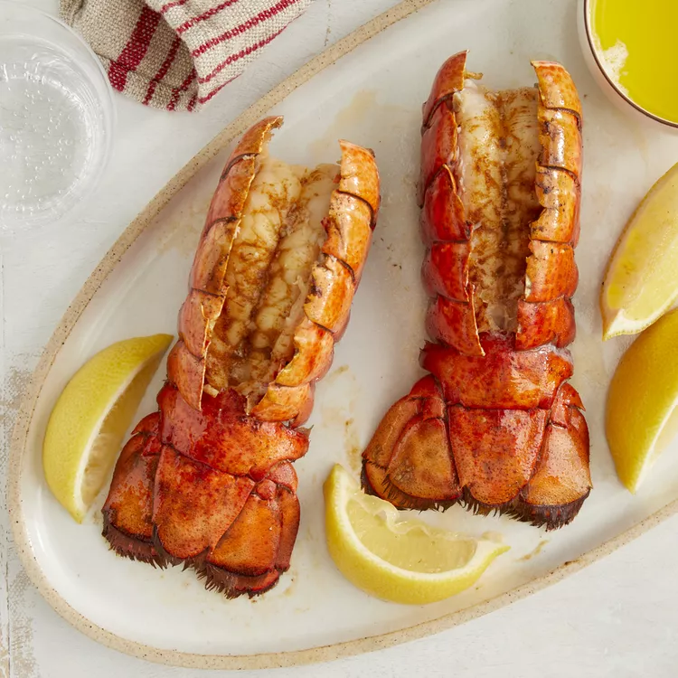

Broiled Lobster Tails
<-- back

This delicious lobster tail recipe cooks whole lobster tails with melted butter and paprika under the broiler
for an impressive meal for two that's quick and easy to do!
Ingredients
- 2 whole lobster tails
- ½ cup butter, melted
- ½ teaspoon ground paprika
- salt and ground white pepper to taste
- 1 lemon, cut into wedges
Steps to follow!
- Preheat the broiler.
- Place lobster tails on a baking sheet. With a sharp knife or kitchen shears, carefully cut the top side of lobster shells lengthwise.
Pull apart shells slightly, and season meat with equal amounts of melted butter, paprika, salt, and white pepper.
- Broil lobster tails until lightly browned and lobster meat is opaque, about 5 to 10 minutes. Garnish with lemon wedges to serve.
- Enjoy!!